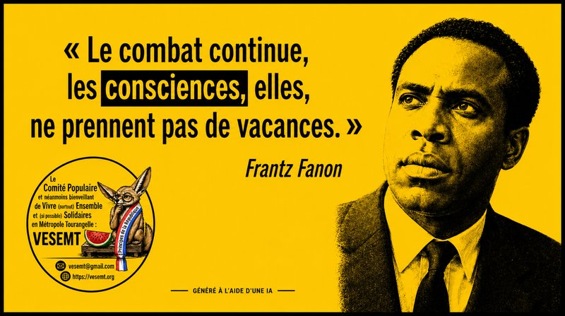

Voilà une phrase qui vieillit mieux que bien des discours politiques. Peut-être parce qu’elle ne promet rien de confortable.La conscience, c’est assez pratique : ça ne coûte rien, ça ne se privatise pas et, contrairement à certaines indignations de circonstance, ça ne disparaît pas au premier rayon de soleil.
On voudrait pourtant nous convaincre que tout est réglé. Que les discriminations appartiennent au passé, que le racisme serait devenu une simple faute de goût, que les rapports de domination auraient pris leur retraite et que l’histoire, après quelques siècles de mauvais traitements, aurait finalement décidé de passer à autre chose.
Quelle charmante fiction.
Alors oui, le combat continue. Contre le racisme, contre les hiérarchies héritées, contre les humiliations banalisées, contre celles et ceux qui voudraient transformer l’injustice en fatalité et la colère en problème de comportement.
Résister. Penser. Transmettre.
Trois verbes. Pas très vendeurs à l’ère du développement personnel, certes. Mais infiniment plus utiles qu’un énième tuto pour « devenir la meilleure version de soi-même » pendant que le monde s’emploie méthodiquement à rester la pire version de lui-même.
Ne pas oublier. Ne pas se taire. Ne pas laisser la mémoire devenir un musée.
Parce qu’une conscience en vacances trop longtemps finit parfois par prendre le confort pour la vérité.
Et ça, historiquement, finit rarement bien.
Abd-El-Kader AIT-MOHAMED
- Locataire HLM de la Tour de la Galboisière et « Fier de l’être »
- Membre du Comité populaire et néanmoins bienveillant de Vivre (surtout) Ensemble et (si possible) Solidaires en Métropole Tourangelle (VESEMT).
-
« Le combat continue » : Un slogan politique universel (proche du « A luta continua » issu des luttes d’indépendance africaines contre la colonisation portugaise, notamment popularisé par Samora Machel et Eduardo Mondlane au Mozambique).
-
« Les consciences ne prennent pas de vacances » : Une métaphore moderne souvent employée dans les manifestes ou éditoriaux pour souligner la permanence de l’engagement éthique et politique contre la passivité, les discriminations ou l’injustice.
Pour faire référence directement aux écrits authentiques de Frantz Fanon, voici des citations réelles extraites de Les Damnés de la terre (1961) :
-
« Chaque génération doit, dans une relative opacité, découvrir sa mission, la remplir ou la trahir. »
-
« La conscience de soi n’est pas fermeture à la communication. La réflexion philosophique nous apprend au contraire qu’elle en est la garantie. »
-
« Élever la conscience du peuple, c’est le rendre responsable, c’est lui faire comprendre que tout dépend de lui. »
Tags : #MémoiresFertiles #VESEMT #FrantzFanon #Antiracisme #LutteContreLesDiscriminations #RésisterPenserTransmettre #JusticeSociale #EngagementCitoyen #EgaliteDesDroits #MemoireVive #PenseeCritique #LutteAnticoloniale #Solidarite #ToursMetropole #SaintPierreDesCorps #VieDeQuartier #HLM #LogementSocial
Commentaires